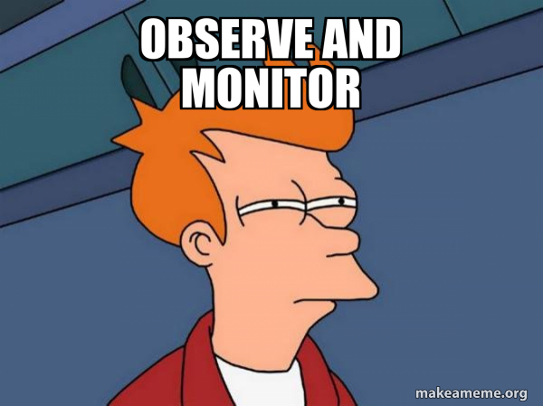
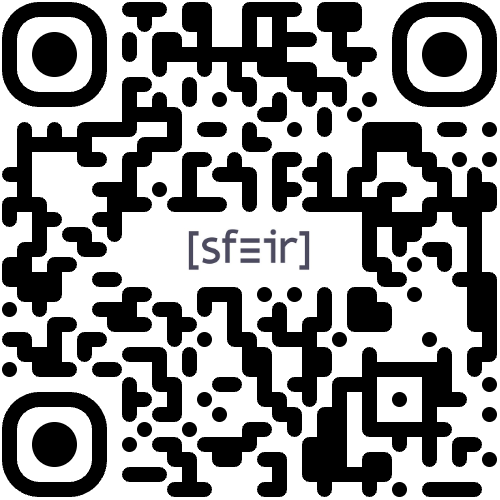

Observabilité Kubernetes
La stack Grafana en pratique


Bastien Chalier
Platform Engineer
Co-fondateur de
Pourquoi observer ?
Observer quoi ?
Comprendre avant d'appliquer
Pourquoi observer ?
- Monitoring: détecter les anomalies
- Investigation: comprendre les causes
- Détails: expliquer l'impact
Où observer ?
Focus sur Kubernetes pour cette session
Un vaste ecosystème

Les SaaS

Les spécialistes

L'Open source

2013 - Grafana
- Kibana fork for metrics
- Focus on UI
- Backend agnostic
2016 - Cortex
- Multi-tenant
- Scalable - HA
- Long-term storage
2018 - Loki
- 1 Po logs/jour
- Indexer uniquement les labels
- 75% moins cher
2020 - Tempo
- 2m spans/s
- Integration avec metrics/logs
- Conserver 100% des spans
2022 - Mimir
- 1M de séries
- Sortie de prometheus
- + performance - resources
Demo time !
La construction
Helmfile
repositories:
- name: a-repo
[...]
releases:
- name: a-helm-release
[...]
- name: another-helm-release
[...]
Commençons par les prérequis
- operateur grafana
- mailpit
- operateur minio
- une pool minio
Minio values
tenant:
name: grafana-stack
certificate:
requestAutoCert: false
buckets:
- name: mimir-blocks
- name: mimir-ruler
- name: loki-chunks
- name: loki-rules
- name: loki-admin
- name: tempo
Grafana
- l'interface
- les data sources
- les dashboards
- les alertes
Mimir - 2.*

Mimir - 3.*

Le reste
- Loki
- Tempo
- Alloy
- Applications
- K6
Considérations
- Prix publics
- Logs uniquement
- Simplifications
Datadog Logs
- Prix par GB ingéré
- Prix par événement indexé
- Archive DIY
Datadog – Ingestion
- ≈ $0.10 par GB
- 100% des logs
Datadog – Indexation
- Prix par million d'événements
- 30j retention ≈ $2.50 par 1M événements
- 100% et 10% d'index
Hypothèses
- ≈ 1 kB par événement
- 1 GB logs ≈ 1M événements
- 100% indexé, 30d ≈ $2.60/GB
- 10% indexé, 30d ≈ $0.36/GB
Grafana Cloud Logs (Loki)
- Prix par Go ingéré
- Rétention 30 jours incluse
- 100% indexé
Grafana Cloud – Chiffres
- Abonnement : 19 $/mois
- Inclut 50 Go/mois
- ≈ 0,50 $ par Go ingéré
Loki auto-hébergé
- Loki sur Kubernetes
- Stockage objet
- Gestion interne
Loki auto-hébergé – coûts
- Stockage objet
- Compute
- Réseau
- Humains
Loki auto-hébergé – Chiffres
- Basé sur GCP
- Avec 3 humains
- ≈ 0,15 $ par Go ingéré
Récap
| Offre |
Coût estimé / Go |
| Datadog |
$2.60/Go (≈ $0.36/Go pour 10%) |
| Grafana Cloud |
$0.50/Go |
| Loki sur GCP |
$0.15/Go |
Scénario 1 - Paramètres
| Paramètre |
Valeur |
| Volume journalier |
50 Go/jour |
| Volume mensuel |
≈ 1,5 To/mois (1 500 Go) |
| Rétention |
30 jours |
Scénario 1 – Datadog (100%)
| Poste |
Montant estimé |
| Ingestion |
1 500 × 0,10 $ ≈ 150 $ |
| Indexation (30 j) |
1 500 × 2,50 $ ≈ 3 750 $ |
| Total |
≈ 3 900 $/mois |
Tous les logs sont interrogeables
Scénario 1 – Datadog (10%)
| Poste |
Montant estimé |
| Ingestion |
1 500 × 0,10 $ ≈ 150 $ |
| Indexation (10 % des logs) |
150 × 2,50 $ ≈ 375 $ |
| Total |
≈ 525 $/mois |
≈ 10 % des logs sont interrogeables
Scénario 1 – Grafana Cloud Logs
| Poste |
Montant estimé |
| Volume facturé |
≈ 1 450 Go × 0,50 $ ≈ 725 $ |
| Frais de plateforme |
≈ 19 $ |
| Total |
≈ 744 $/mois |
Tous les logs sont interrogeables
Scénario 1 – Loki auto-hébergé
| Poste |
Montant estimé |
| Infra |
1 500 Go × 0,10 $ ≈ 150 $ |
| Humains |
1 x 10 000 $ |
| Total |
≈ 10 150 $/mois |
Coût cloud minimal, effort ops élevé
Scénario 1 – Conclusion
| Datadog 100% |
3 900 $/mois |
| Datadog 10% |
525 $/mois |
| Grafana Cloud |
744 $/mois |
| Auto hebergé |
10 150 $/mois |
Scénario 2
| Paramètre |
Valeur |
| Volume journalier |
20 To/jour |
| Volume mensuel |
≈ 600 To/mois |
| Rétention |
30 jours |
Scénario 2 – Datadog (100%)
| Poste |
Montant estimé |
| Ingestion |
600 000 × 0,10 $ ≈ 60 k$ |
| Indexation (30 j) |
600 000 × 2,50 $ ≈ 1,5 M$ |
| Total |
≈ 1,56 M$/mois |
Il y a de beaux chateaux à ce prix là
Scénario 2 – Datadog (10%)
| Poste |
Montant estimé |
| Ingestion |
600 000 × 0,10 $ ≈ 60 k$ |
| Indexation (10 % des logs) |
60 000 × 2,50 $ ≈ 150 k$ |
| Total |
≈ 210 k$/mois |
≈ Mieux, mais seulement 10% des logs
Scénario 2 – Grafana Cloud Logs
| Poste |
Montant estimé |
| Logs ingérés |
600 000 Go × 0,50 $ |
| Total |
≈ 300 000 $/mois |
Les frais de plateforme sont négligées à ce niveau
Scénario 2 – Loki auto-hébergé
| Poste |
Montant estimé |
| Infra |
600 000 Go × 0,10 $ ≈ 60 000 $ |
| Humains |
3 x 30 000 $ |
| Total |
≈ 90 000 $/mois |
Reste largement en dessous des prix SaaS catalogue
Scénario 2 – Conclusion
| Datadog 100% |
1,56 M$/mois |
| Datadog 10% |
210 k$/mois |
| Grafana Cloud |
300 k$/mois |
| Auto hebergé |
90 k$/mois |
Datadog
- Prêt à l’emploi
- Meilleure UX
- Le plus cher
Grafana Cloud
- Pas de maintenance
- 100% des données
- Prix acceptable
Grafana + Loki
- DIY, maintenance importante
- Modulaire, mais parfois difficile d'utilisation
- Coûts plus maitrisés
Loki - Limitations
- Index limité
- Performance
- Recherche full-text
Message final
- Ne loggez pas tout
- Ajuster la retention
- Contrôlez la cardinalité
- Standardisez
Merci ! Questions ?
https://github.com/bchalier/talk-grafana-stack
